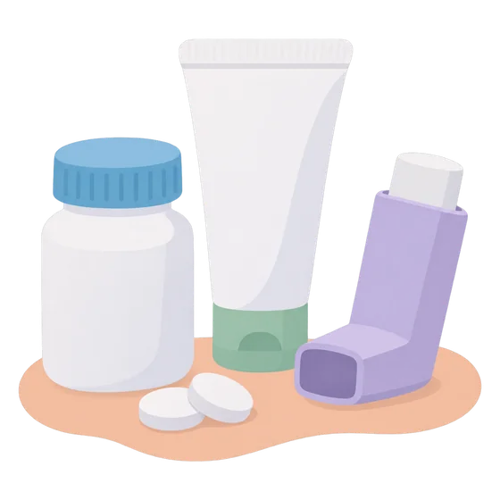

Entender qué me está pasandoUnderstanding what is happening to me
Borrador pendiente de revisión clínica.Draft pending clinical review.
El cortisol y el síndrome de CushingCortisol and Cushing's syndrome
El cortisol es una hormona que producen las glándulas suprarrenales, situadas encima de los riñones. Es necesaria para vivir: ayuda a manejar el estrés, controla el azúcar en la sangre, la presión arterial y la inflamación.
El síndrome de Cushing aparece cuando el cuerpo está expuesto durante mucho tiempo a demasiado cortisol. Puede causar aumento de peso en la cara y el abdomen, moretones fáciles, debilidad muscular, estrías, presión alta, diabetes, huesos frágiles o cambios en el ánimo y el sueño.
No todas las personas tienen todos los síntomas, y muchos aparecen poco a poco. Por eso el diagnóstico puede tardar.
Cortisol is a hormone made by the adrenal glands, which sit on top of the kidneys. It is essential for life: it helps handle stress and controls blood sugar, blood pressure and inflammation.
Cushing's syndrome happens when the body is exposed to too much cortisol for a long time. It can cause weight gain in the face and abdomen, easy bruising, muscle weakness, stretch marks, high blood pressure, diabetes, fragile bones or changes in mood and sleep.
Not everyone has every symptom, and many appear gradually. That is why diagnosis can take time.
glándulas suprarrenales e hipófisisSpace for illustration:
adrenal glands and pituitary
¿Síndrome o enfermedad de Cushing?Cushing's syndrome or Cushing's disease?
Síndrome de Cushing es el nombre general para el exceso de cortisol, sea cual sea su causa. Enfermedad de Cushing es una causa concreta: un tumor pequeño y casi siempre benigno en la hipófisis, una glándula en la base del cerebro, que produce demasiada ACTH, la hormona que ordena a las suprarrenales fabricar cortisol.
Cushing's syndrome is the general name for excess cortisol, whatever the cause. Cushing's disease is one specific cause: a small, almost always benign tumor in the pituitary, a gland at the base of the brain, that makes too much ACTH, the hormone that tells the adrenal glands to produce cortisol.
El cortisol y sus causasCortisol and its causes
Identificar la causa ayuda a orientar el estudio y el tratamiento.Finding the cause guides further testing and treatment.
Origen hipofisarioPituitary origin
Un tumor en la hipófisis produce ACTH de más. Es la causa más frecuente de Cushing producido por el propio cuerpo.A pituitary tumor makes too much ACTH. It is the most common cause of Cushing's produced by the body itself.
Origen ectópicoEctopic origin
Un tumor fuera de la hipófisis, por ejemplo en el pulmón o el páncreas, produce ACTH. Es menos frecuente.A tumor outside the pituitary, for example in the lung or pancreas, makes ACTH. It is less common.
Origen suprarrenalAdrenal origin
Un tumor en una glándula suprarrenal produce cortisol directamente.A tumor in an adrenal gland makes cortisol directly.

Por medicamentosFrom medicines
Los corticoides en pastillas, inhaladores, cremas o infiltraciones son la causa más frecuente en general.Steroids in tablets, inhalers, creams or injections are the most common cause overall.
Preguntas frecuentesFrequently asked questions
¿Por qué necesito tantas pruebas?Why do I need so many tests?
Ninguna prueba sola es perfecta, y el cortisol cambia a lo largo del día y con el estrés. Por eso el equipo combina varias: primero para confirmar que hay exceso de cortisol, después para saber de dónde viene. Tu equipo integra todos los resultados con tu historia clínica.
No single test is perfect, and cortisol changes during the day and with stress. So the team combines several: first to confirm excess cortisol, then to find where it comes from. Your team puts all results together with your medical history.
¿Es una enfermedad frecuente?Is it a common condition?
El síndrome de Cushing producido por el propio cuerpo es poco frecuente. Por eso conviene que lo valore un equipo con experiencia en enfermedades de la hipófisis y las suprarrenales.
Cushing's syndrome produced by the body itself is rare. That is why it is best assessed by a team experienced in pituitary and adrenal conditions.
¿Tiene cura?Can it be cured?
Muchas personas se curan con el tratamiento de la causa. La recuperación lleva tiempo, y hace falta un seguimiento a largo plazo para detectar a tiempo si la enfermedad vuelve.
Many people are cured by treating the cause. Recovery takes time, and long-term follow-up is needed to detect early if the condition returns.
Tomo corticoides que me recetaron. ¿Debo dejarlos?I take prescribed steroids. Should I stop them?
No los suspendas por tu cuenta: dejarlos de golpe puede ser peligroso. Cuéntale a tu equipo todos los que usas, incluidas cremas, inhaladores e infiltraciones, y ellos te dirán cómo proceder.
Do not stop them on your own: stopping suddenly can be dangerous. Tell your team about all the ones you use, including creams, inhalers and injections, and they will tell you what to do.